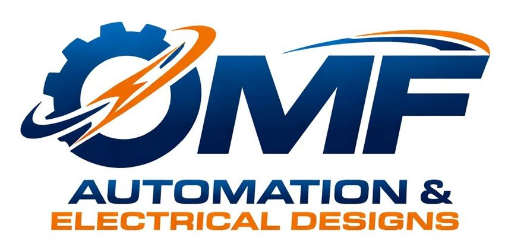

We develop practical automation solutions designed to improve manufacturing efficiency, consistency, reliability, and operational flexibility.
Explore Our ProjectOMF Automation was founded with a simple objective: to apply engineering and automation to solve real manufacturing challenges.
Manufacturing environments often rely on processes that have evolved over time, combining manual operations, semi-automated equipment, and operator expertise. While these processes can be effective, they may also present opportunities to improve consistency, efficiency, ergonomics, and long-term operational sustainability.
Our approach is to understand the process first, identify where automation can provide meaningful value, and develop solutions that integrate technology with the realities of manufacturing.
We focus on practical engineering—not automation for the sake of automation.
We approach automation as an engineering process, beginning with an understanding of the operation and ending with a solution designed around its real manufacturing requirements.
Understand the existing process, requirements, limitations, and opportunities.
Develop solutions based on the actual needs of the process rather than applying a one-size-fits-all approach.
Integrate automation, controls, equipment, sensors, and operator interfaces into the solution.
Pursue improvements in efficiency, consistency, reliability, and long-term operation.
Our engineering approach combines automation technology with practical manufacturing knowledge to develop solutions for real-world applications.
Development of automated solutions for manufacturing operations and equipment.
Identify and automate repetitive or labor-intensive manufacturing operations.
Control systems and operator interfaces designed for automated equipment.
Integration of sensors, motion systems, machines, and control technologies.
Engineering solutions aimed at reducing variability and improving operational efficiency.
Modernization and automation opportunities for existing manufacturing equipment and processes.
Our current project focuses on the automation of a legacy manufacturing process involving multiple manual and semi-manual assembly operations.
The process involves the preparation of a precision stylet, insertion into a body component with controlled orientation, cap placement, and a press-fit operation.
The project explores how automation can be applied to improve process consistency, reduce operator dependency, and increase overall manufacturing efficiency while maintaining the precision required by the application.
The solution combines mechanical systems, sensors, motion control, automation logic, and human-machine interface technology into an integrated manufacturing system.
OMF Automation is driven by a team with a shared interest in automation, manufacturing technology, and practical engineering solutions.
Automation & Engineering
Automation & Engineering
Automation & Engineering
Have a manufacturing process that could benefit from automation or engineering improvement?
Contact OMF Automation